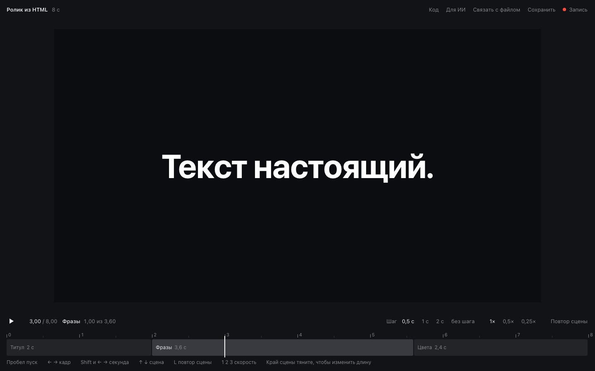

Потяните фото или карточку, поправьте текст двойным щелчком, оставьте замечание. Потом скопируйте правки и отдайте их ИИ
Как подключить
Тяните мышью, края прилипают к соседям
Двойной щелчок по тексту, правьте как в документе
«Скопировать правки» и вставить в чат одним сообщением
Это пример. Сама страница не меняется, правки хранятся в браузере